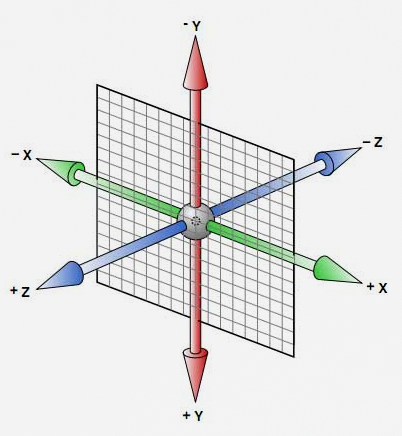

3D坐标系相关CSS3属性
3D坐标系，如下图所示。也就是我们学过的具有x，y，z轴的三维坐标系。

- perspective：perspective(length) 为一个元素设置三维透视的距离。仅作用于元素的后代，而不是其元素本身。当perspective:none/0;时，相当于没有设perspective(length)。perspective的长度相当于我们眼睛离物体的距离。
- transform-style：flat(默认，二维效果) / preserve-3d(三维效果)。设置一个元素的transform-style:preserve-3d；只影响这个元素的子元素(如果孙元素也有3d效果，那么还必须给子元素设置preserve-3d)。
- transform：3D转换，我们可以通过旋转(rotate函数)、平移(translate函数)、缩放(scale函数)等动作对3D物体进行变换。
3D轮播图
demo地址：CSS3实现3D轮播图
原理：
- 最外层设置一个表示舞台的块(div.stage)，并给它一个perspective属性。
- 在舞台（div.stage)里面设置一个用来旋转的容器块（div.conttainer),并给它一个transform-style属性，让它的子元素具有三维效果。3D轮播旋转的就是这个container。
- 在容器块（div.container)下面添加3D图，让每一个3D图都绝对定位,并且让每一个3D图都沿着Y轴旋转一定角度，因为此处为6张轮播图，所以每一张的旋转角度都比前一张多360/6=60度。与此同时，让每一个3D图都向它的Z轴平移一定位置，目的是避免图的重合。
- 对容器块（div.container)使用animation动画效果，让container沿着Y轴不断旋转。
- 注意点：container使用了水平居中定位，它的宽高值最好与img的宽高值一致，否者可能会出现旋转轴不固定的情况。
代码如下：123456789101112131415161718192021222324252627282930313233343536373839404142434445464748495051525354<html lang="en"><head><meta charset="UTF-8"><title>CSS3实现3D 轮播图</title><style>.stage{position: absolute;width: 100%;perspective: 1000px;}.container{position: relative;width: 200px;height: 200px;left: 50%;top: 200px;transform: rotateX(-30deg);transform-style: preserve-3d;animation: rotate-frame 10s linear infinite;}.img{position: absolute;width: 200px;height: 200px;text-align: center;font-size: 40px;line-height: 200px;background-color: rgba(0,0,0,0.5);}@keyframes rotate-frame{0%{transform: rotateX(-30deg) rotateY(0deg);}100%{transform: rotateX(-30deg) rotateY(360deg);}}</style></head><body><div class="stage"><div class="container"><div class="img" style="transform: rotateY(0deg) translateZ(0px);">0</div><div class="img" style="transform: rotateY(0deg) translateZ(200px);">1</div><div class="img" style="transform: rotateY(60deg) translateZ(200px);">2</div><div class="img" style="transform: rotateY(120deg) translateZ(200px);">3</div><div class="img" style="transform: rotateY(180deg) translateZ(200px);">4</div><div class="img" style="transform: rotateY(240deg) translateZ(200px);">5</div><div class="img" style="transform: rotateY(300deg) translateZ(200px);">6</div></div></div></body></html>